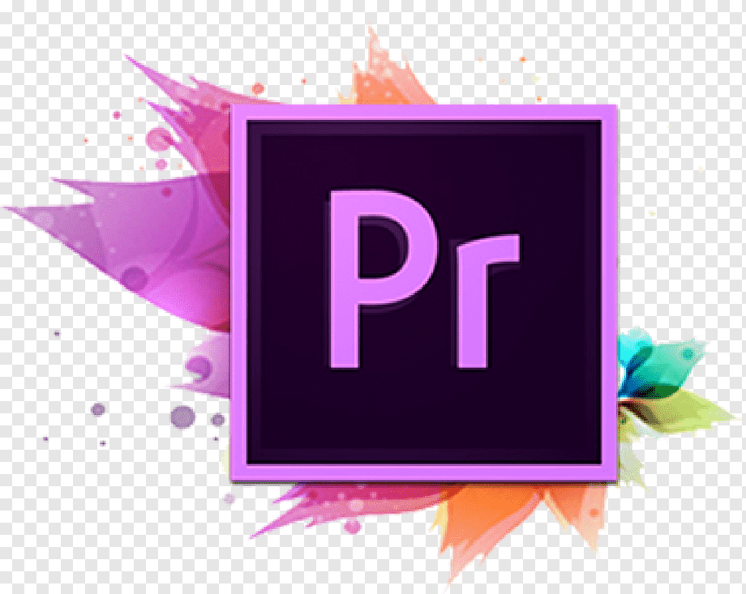

Software that we learned

Photoshop
Adobe Photoshop is a raster graphics editor for Windows and macOS developed and marketed by Adobe Inc.Since then, not only in raster graphics editing, but also in digital art in general, the software has become the industry standard..

Packet Tracer
Packet Tracer is a Cisco Systems cross-platform visual simulation application for creating network topologies and simulating modern computer networks..

Premiere
Video, advertisements, and other cinema, television, and web video are all edited with Premiere Pro.